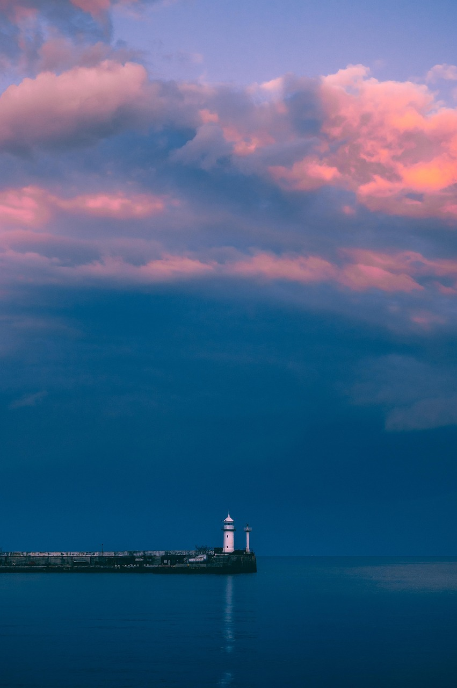

Backstory
I was born in Utah and I have lived here my whole life for sixteen years. It is the only place I know well, so it feels normal to me. I have grown up going to school here, spending time with friends, and living in the same general environment for as long as I can remember.
Lately, I have been thinking more about other places in the United States. One place that stands out to me is the Pacific Northwest. I do not have personal experience living there, but it interests me because it is very different from where I live now. Utah is the only environment I know, so other regions naturally feel new and different to me.
I think part of why I am interested in it is because I want to see something different from what I have always known. Living in the same state my whole life makes me curious about how life might feel somewhere else. Especially where greenery is common, I would love a place like that.
The Pacific Northwest feels like a place that would be very different from Utah in many ways. I have never lived anywhere like it, so it is hard to fully understand what it would be like, but that is part of what makes it interesting to me. It seems nicer and cozier than anywhere I've been so far.
Utah will always be the place I grew up, and it is an important part of my life. At the same time, I have started to think more about other places like Oregon, Maine, and even maybe Florida and what it would be like to experience something different in the future.
